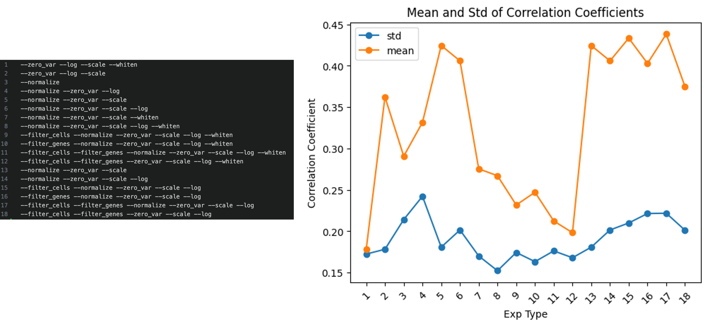
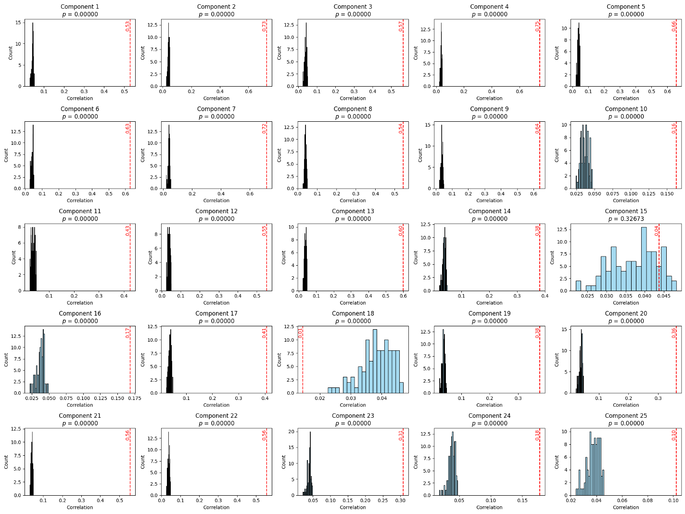

Morphology (Histopathology) <-> Gene Expression (Spatial Transcriptomics)
Abstract
Understanding the dynamic relationship between gene expression and tissue morphology is crucial for studying tumour microenvironments, disease progression, and therapeutic response. While spatial transcriptomics provides single-cell transcriptomic insights, existing computational pathology models struggle to integrate these data effectively. We propose a Sparse Canonical Correlation Analysis (sCCA)-based framework that captures shared gene-morphology variation and enables biologically interpretable analysis at single-cell resolution. Our method eliminates the need for large training datasets and priors by using overlapping image patches centered on individual cells and aligning them with transcriptomic data. Using the Xenium 10x Genomics dermal melanoma dataset, we demonstrate strong correlations between morphology and gene expression, with enriched biological pathways confirmed through Gene Set Enrichment Analysis. These findings highlight the potential of interpretable, multimodal integration for biomarker discovery and precision medicine.
Ablation Studies
We conducted a series of ablation studies to evaluate the impact of various preprocessing steps on model performance. A total of 12 initial experiments assessed the influence of cell/gene filtering, normalization, log transformation, variance filtering, and whitening. Results showed that whitening—while often beneficial in traditional workflows—negatively impacted our setup due to the uncorrelated nature of deep feature vectors extracted from a pretrained model. Our best results were observed when using a full preprocessing pipeline excluding whitening.
Permutation Testing
To statistically validate the significance of the learned components, we conducted permutation testing. In this method, image features were shuffled while keeping the gene expression matrix fixed, breaking the paired structure. We reran sCCA 100 times and found that the original correlations significantly exceeded those from the permuted distributions. Although canonical correlation analysis can induce rotation in high-dimensional space—potentially misaligning components—we observed consistent patterns without needing component matching. Correlations for unpaired data dropped close to zero, reinforcing the statistical robustness of the learned associations.
Discussion and Future Work
1. To build confidence in the discovered associations between morphology and gene expression, we aim to design a more robust statistical validation strategy. This will include cross-validation, permutation testing, and component alignment to rule out spurious correlations and ensure component reproducibility across samples.
2. Since current interpretation often relies on domain experts, we plan to explore semi-automated and fully automated alternatives to assess the biological relevance of canonical variates. These improvements will make the pipeline scalable and reduce inter-observer subjectivity.
3. Spatial resolution plays a pivotal role in how effectively we detect gene-morphology coupling. We will investigate how gene correlations shift when we aggregate gene expression over different patch sizes. The goal is to determine the optimal patch size that balances morphological specificity with transcriptomic sensitivity.
4. Deep learning features are often extracted from relatively large image patches. To increase fidelity, we intend to fine-tune existing foundation models or develop new representations optimized for smaller patch sizes, focusing explicitly on single-cell precision.
5. The potential generalizability of this framework across cancer types will be explored. By applying the same pipeline to other spatial datasets, we will evaluate whether shared gene-morphology features persist across different tissue types and diseases.
6. Multimodal integration is critical for achieving comprehensive tissue profiling. To this end, we plan to extend our framework to incorporate additional data modalities like immunofluorescence, spatial proteomics, and metabolomics.
7. Finally, one of our key goals is to relate observed spatial patterns to clinical metadata. We aim to identify gene-morphology patterns that correlate with tumour progression, patient outcomes, and therapeutic response using rich clinical annotations from datasets like PREDICT-Meso.